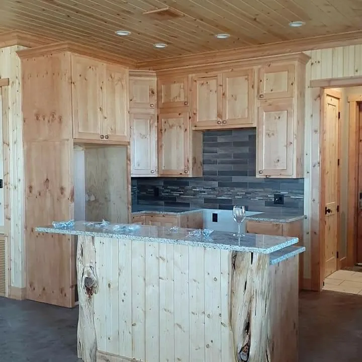
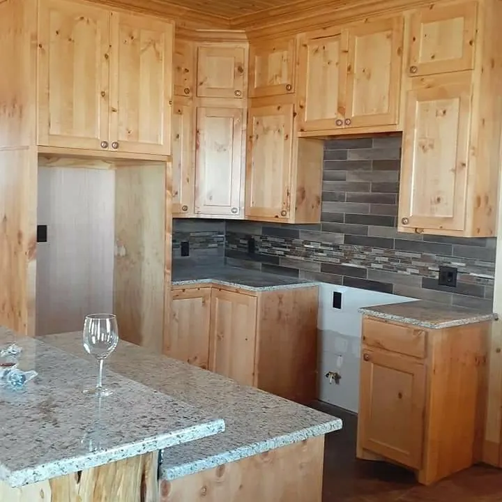
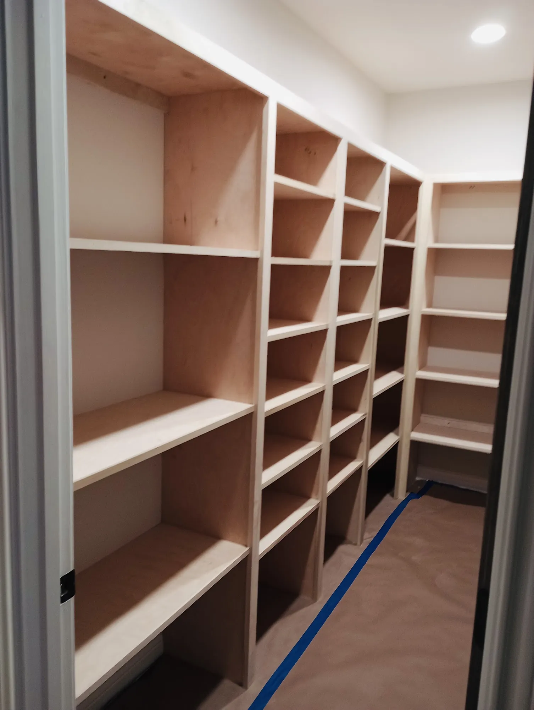
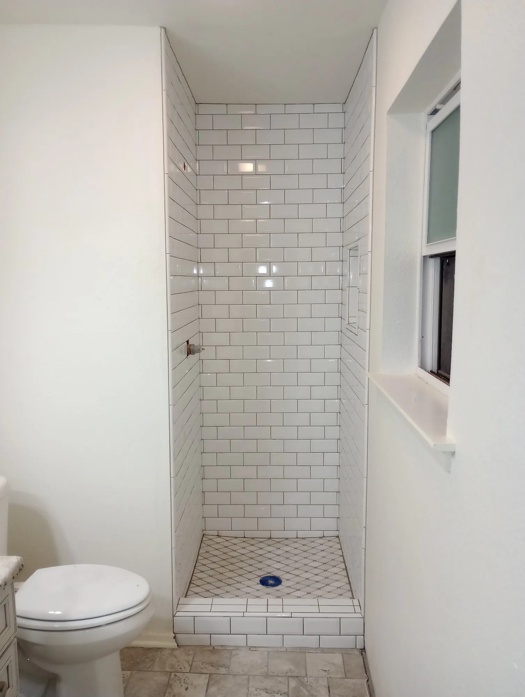
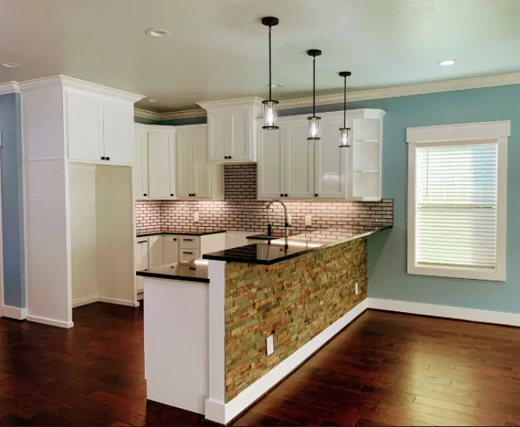
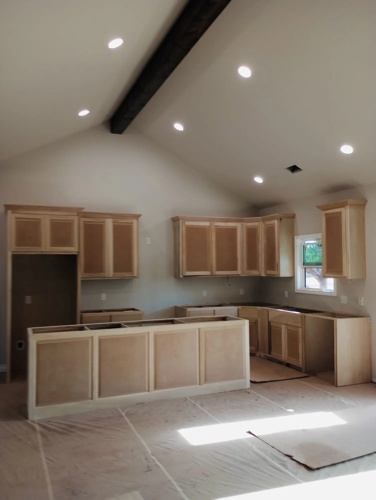

FIG. 01White kitchen with a double oven range and grey tile backsplash

No. 01
Custom cabinets
Built for the room they go in. The work H&T is listed for, and the one customers mention most.
H&T Custom Interiors is listed on Google as a cabinet maker, and cabinets come up in more reviews than anything else. Becca T. had custom cabinets built, Carrol S. had cabinets done, and David S. wrote that “the cabinets look great.”
Their project photos show the range: painted white cabinetry, stained wood, natural knotty-wood kitchens, islands, pantries and bathroom vanities.
“We had custom cabinets built by H&T Custom Interiors and had a great experience working with them! They were very easy to work with, their pricing was reasonable, and…”— Becca T, Google review

No. 02
Kitchen remodels
Islands, wall cabinets, counters and the details in between.
David S. had his kitchen remodeled and said the space “turned out even better than I expected.” Linda B. had kitchen work done as part of a bigger list of projects.
Kitchens make up most of the project photos on their Google listing, from bright white islands with pendant lights to warm stained-wood rooms with vaulted ceilings.
“H&T Custom Interiors did an awesome job on our kitchen remodel. The quality and attention to detail were spot on. The cabinets look great, and the space turned out even…”— David Solis, Google review
No. 03
Bath remodels & custom vanities
Vanities and bathrooms built to fit, finished clean.
Linda B. had a bath remodel done, including custom vanities. The photos show stained and painted vanities, a tall wall cabinet over the toilet and wood-look tile floors.
“Have had a lot of work done by Jonathan and his crew. Bath remodel including custom vanities, new shop, and kitchen work. They are excellent!! Very respectful and…”— Linda Bennington, Google review

No. 04
Built-ins & storage
Pantries, mudroom lockers, bunk beds and pull-outs.
Their project photos include floor-to-ceiling pantry shelving, a mudroom locker unit with a bench, built-in bunk beds, a pull-out cutting-board drawer and a cabinet run with built-in wine coolers.
If it can be built from wood and fit to a wall, it’s worth a call to ask.

No. 05
Tile showers
Shower tile set straight and clean.
Carrol S. had a shower tiled along with her cabinets. The photos show a white subway-tile walk-in shower with a matching niche and tiled floor.
“Very reasonable price and excellent work. He has done my cabinets, tiled a shower and is very good.”— Carrol Sutherland, Google review
No. 06
Flooring installs
New floors, and a house left spotless every day.
Larry B. hired H&T to install flooring and rated the price as great on his Google review.
“Highly recommend for any work needed around your house. Work was excellent, done professionally, and completely to our satisfaction. Very friendly and the house was left…”— Larry Boer, Google review

No. 07
Interior painting
Inside the house, in a good time frame.
Eilleen F. had the inside of her house painted, and says she’ll use H&T again when she needs them.
“H&T did a fantastic job of painting the inside of the house in a good time frame. Will use again when we need them”— Eilleen Farmer, Google review

No. 08
Bigger projects
Several projects, one crew. Even a new shop.
Some customers keep coming back. Linda B. had a bath remodel, custom vanities, kitchen work and a new shop done. Larry B. recommends them “for any work needed around your house.”
Have a list? Call and walk them through it.
This list is drawn from customer reviews and project photos, not an official service menu. Call to ask about anything not listed.
Talk to the shop
Not sure where to start? Start with a call.
They’ll talk it through and explain everything clearly. That’s what their customers say, anyway.